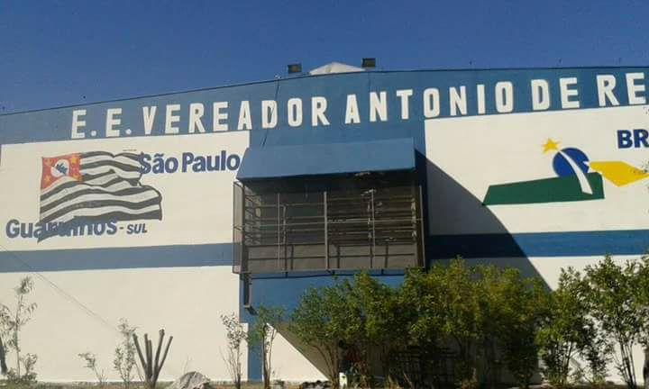
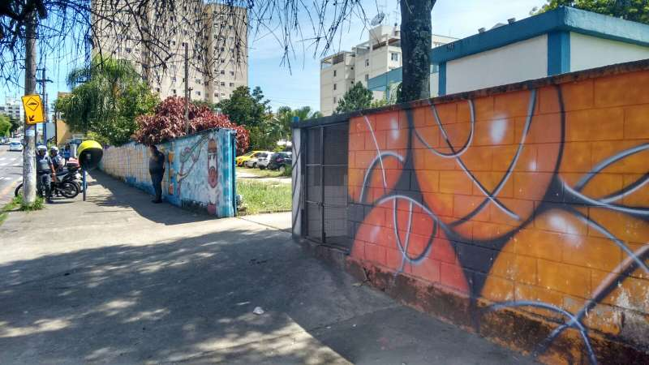
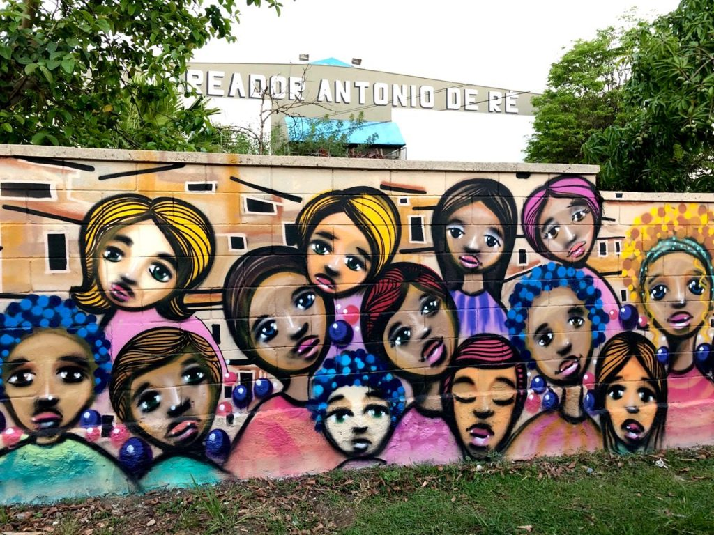
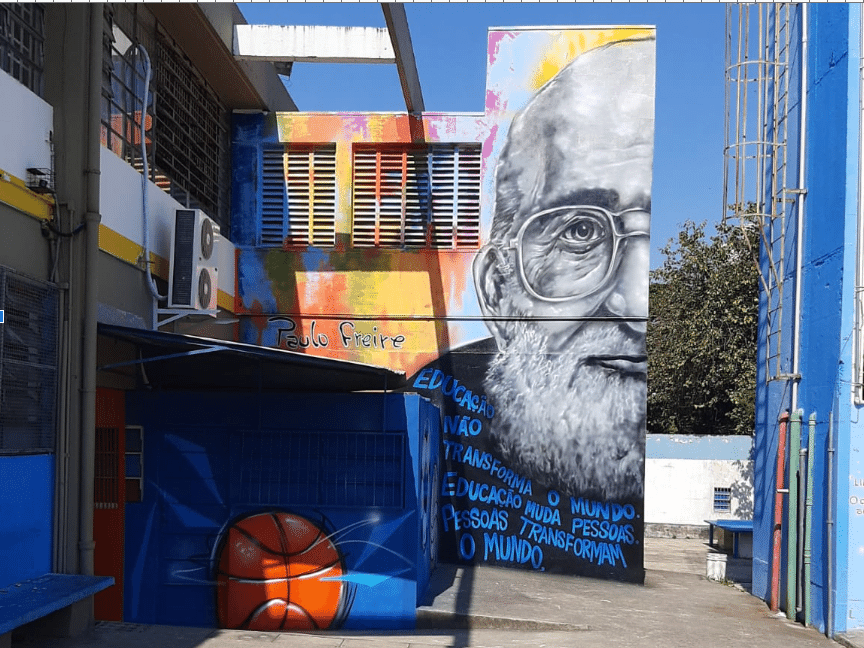

Bem-vindo ao Reencontro dos Ex-Alunos da Escola Estadual Vereador Antonio de Ré
Junte-se a nós para celebrar as memórias e compartilhar experiências da nossa querida escola!
Envie sua foto ou mensagem
Sobre a Escola
A Escola Estadual Vereador Antonio de Ré foi criada com o objetivo de promover uma educação de qualidade para os jovens de Guarulhos. Fundada em [ano de fundação], a escola se tornou um marco na comunidade, oferecendo ensino de excelência e formação cidadã para várias gerações.
Ao longo dos anos, a escola passou por diversas transformações, sempre buscando melhorar sua infraestrutura e currículo, mantendo seu compromisso com a educação pública.


Como é a Escola Hoje
A escola passou por uma série de reformas e melhorias para atender às necessidades atuais dos alunos. Modernizamos a biblioteca, reformamos as salas de aula e construímos uma nova quadra poliesportiva para promover ainda mais o esporte e a educação física.



Memórias dos Alunos
Aqui, você pode compartilhar suas melhores lembranças da escola. Envie suas fotos antigas ou deixe uma mensagem sobre seu tempo como aluno da Escola Estadual Vereador Antonio de Ré.